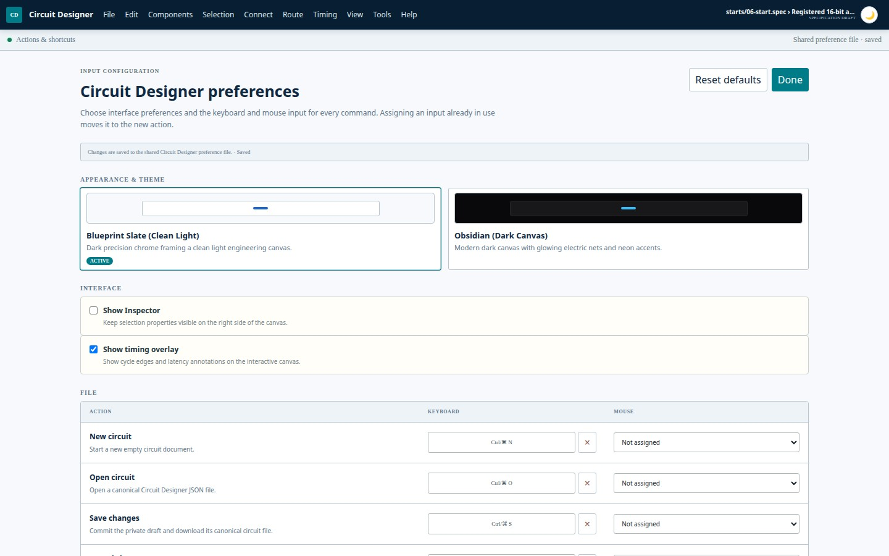

CIRCUIT DESIGNER · GUIDED PRACTICE
Work with an independent circuit
Save a portable circuit and set a personal shortcut.
Before you start
Circuit Designer and a downloaded portable Circuit from core tutorial 8.
Read each action, do it, then compare the expected result before continuing. Use a fresh prepared start to retry. Reading time and automated execution time are not measured learner practice time.
Actions
Start from a fresh saved Design
Opencircuit-independent-start.specand its Design in Circuit Designer. Finish or cancel any private draft.Expected result: This exercise has its own completed source-bound Circuit.
Download a portable copy
Select File → Download → Download Circuit JSON. Save the file under your tutorial run directory.Expected result: You have a .circuit.json file independent of the Spec archive.

Download the portable Circuit before opening an independent copy. Select the image to view its full size. Open an independent tab
Open Circuit Designer at its root URL in another tab. Use File → Open circuit to choose that JSON. Read the binding notice.Expected result: This tab saves by browser download instead of Save to Spec.
Try undo and redo
Select Edit → Begin editing. Move an instance, undo the move, then redo it.Expected result: Only placement changes; the seven connections remain intact.
Save the portable file
Select File → Save and retain the new download under the run directory.Expected result: The browser downloads the edited Circuit; the service does not replace an arbitrary local file.
Inspect a shortcut
Open Edit → Preferences → Actions and shortcuts. Find Fit circuit and record its current binding before changing it.Expected result: You can restore the original preference later.
Resolve and save preferences
Set a preferred unused binding, resolve any reported conflict, and save. Reopen Preferences to compare it.Expected result: The browser retains the preference. Another browser is unaffected.

Actions and shortcuts reports binding conflicts. Select the image to view its full size. Reopen and restore
Open the newly downloaded Circuit and confirm its placement. Compare the original Spec, then restore the recorded shortcut.Expected result: The independent file changed, the original Spec did not, and your previous shortcut is restored.

Check your result
The newly downloaded file retains your layout, and the source Spec retains its original data.
Try it yourself
Record the original shortcut before editing and restore that value after the exercise. Use Reset defaults only with a fresh practice preference file; it does not restore previous custom settings.
If it fails
If you see Save to Spec, you are still in the source-bound tab. Open the portable JSON in a separate root tab before doing this exercise.
Continue
CONTINUEExplore another feature →Reference: circuit designer · Complete example